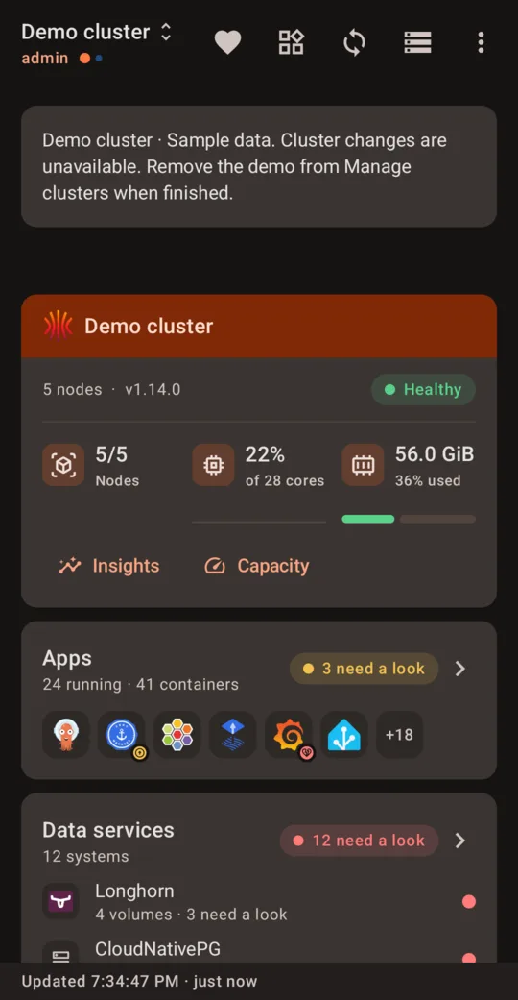
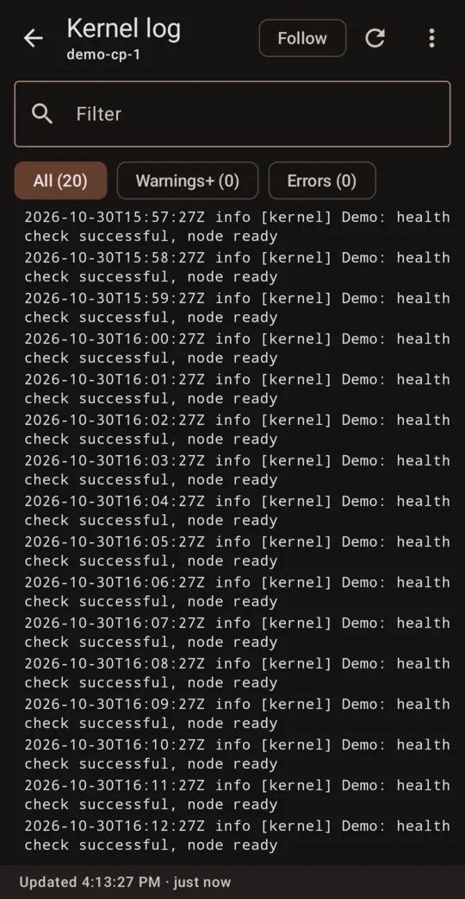
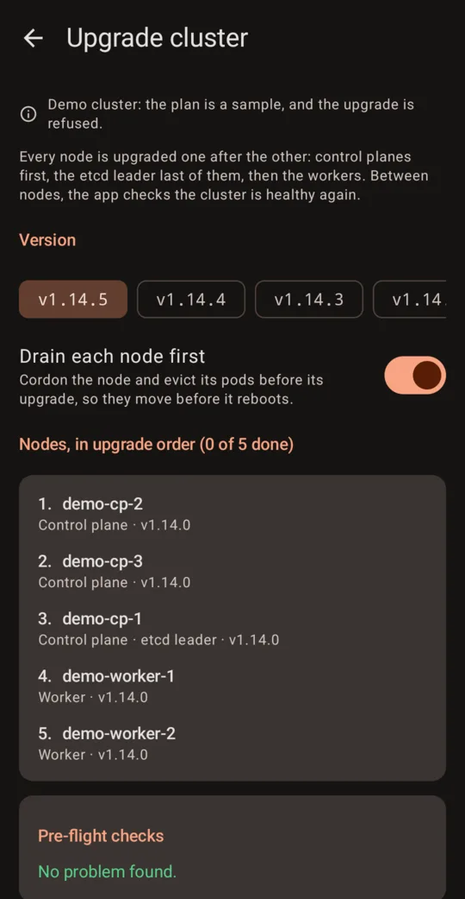
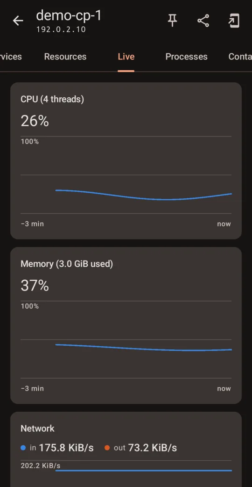

ichor
Every Kubernetes and Talos cluster you run, right in your pocket.
No cluster at hand? Tap Try demo: five nodes, fully offline.

- Talos Linux
- Sidero Omni
- EKS
- GKE
- AKS
- DigitalOcean
- Rancher
- k3s · RKE2 · OIDC
01 · Clusters
Born on Talos. At home on any kubeconfig.
The same Go client as talosctl, and the sign-in your laptop uses for the rest. Nothing to install on the cluster, nothing in between.
- Talos end to end: node health, etcd, KubeSpan, the roles baked into your certificate.
- Cloud accounts, no CLI: list an EKS, GKE or AKS account's clusters and add them.
- Your identity, your RBAC: the app says what you may do before you tap.
02 · Watch
Know a node is down before anyone asks.
The phone itself checks every cluster in the background. No server, no agent.
- Alerts that open the right screen: the node, the pod or the backup it is about.
- Logs, events and live graphs, per node and per service.
- Thirty days of history: uptime, what changed since you last looked, a storage forecast.

03 · Operate
Day two from the phone, every change on record.
Read-only by default. Every action is checked first and written to an audit log.
- Rolling Talos upgrades, node after node, draining first; Kubernetes after a dry run.
- Argo CD and Flux: see the diff, sync, or open a pull request on the repo.
- Runbooks: an ordered list of actions, its plan shown before it runs.

04 · Measure
Is it the network, the storage or the node?
Stop guessing. Measure it where it happens.
- Network test between any two nodes, with netperf.
- Data services: Longhorn, CloudNativePG, Rook Ceph, Garage and more, checked.
- Capacity: what losing a node would cost, before it happens.

05 · Plugins
Any operator gets a screen. One YAML file.
The resources to read, what counts as healthy, the cards, actions and findings.
- A dozen built in: Sealed Secrets, External Secrets, Rook Ceph, Temporal…
- Bring your own: import a file, or ask for one from its CRD.
# sealed-secrets.yaml, built in
detect:
- { group: bitnami.com, resource: sealedsecrets }
fields:
sealedSecret:
synced: conditions.Synced == true
health:
sealedSecret:
- when: "!fields.synced"
health: critical
message: "failed to unseal"
findings:
- { id: unseal-failed, opens: secrets }
Same client as talosctl
Contexts, mTLS and node proxying behave as on your laptop.
Read-only by default
The phone gets only the access you give it.
No account, no tracking
Configs are sealed on the device and only talk to your clusters.
Open source
Apache-2.0, on GitHub, on Android and iPhone.
Your cluster has a pulse. Carry it with you.
Everything Ichor does, screen by screen →
Looking for Play Store beta testers: join on Discord or sign up by mail.